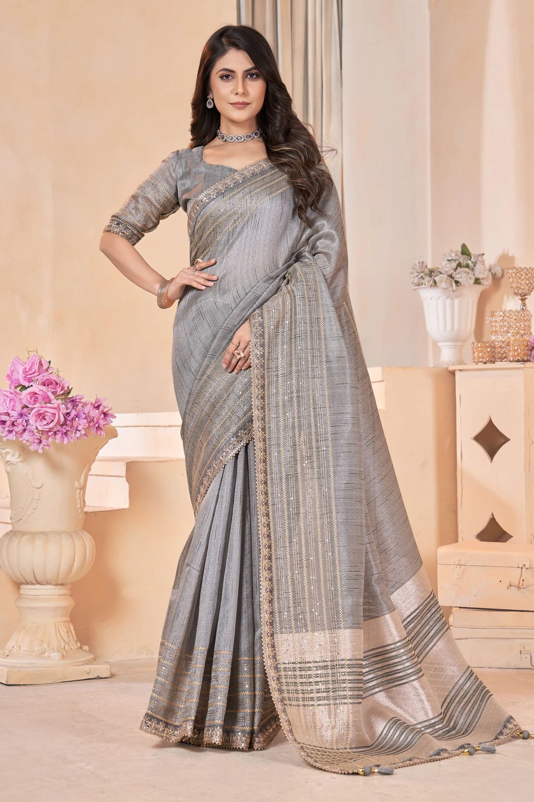
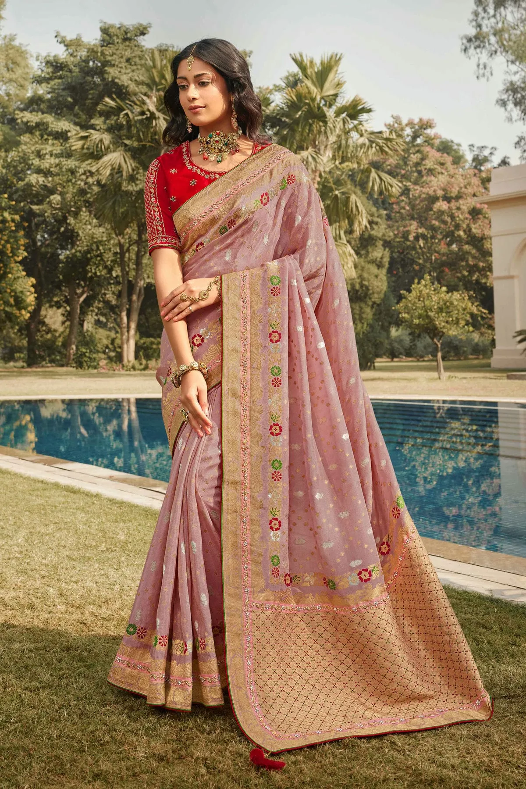
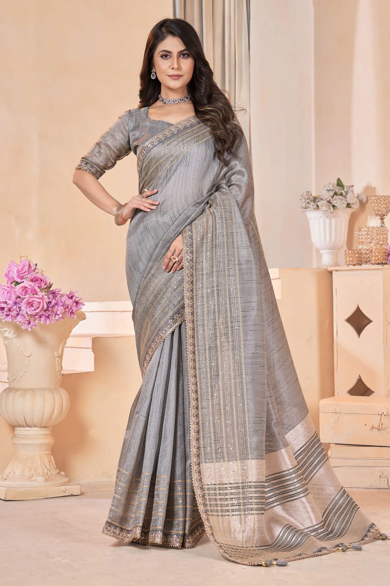
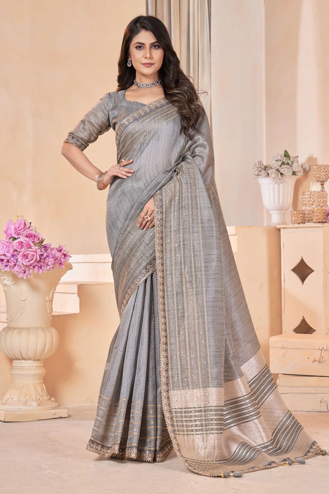
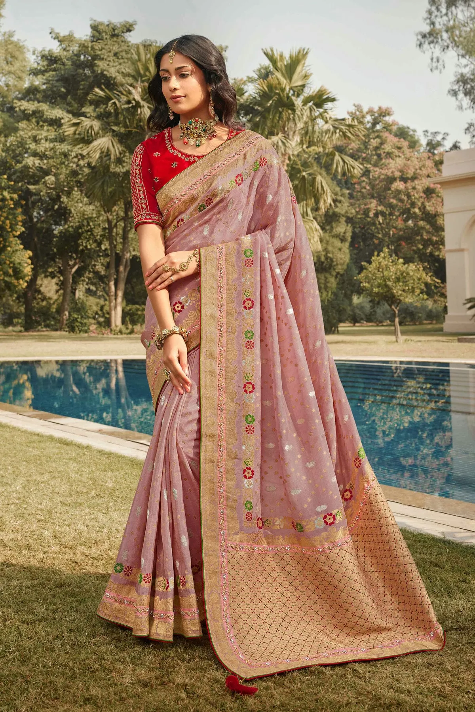
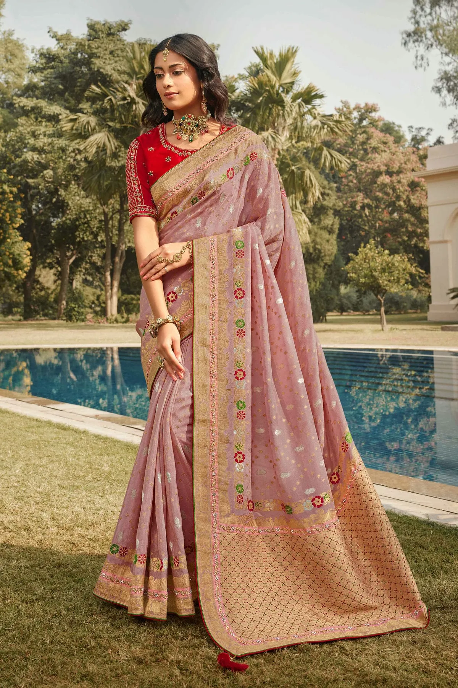

GOTA PATTI SAREE
- Rajasthan


The artisans meticulously stitch small pieces of zari and silk onto the fabric to create delicate gotta patti work on these sarees. Gotta Patti Sarees are a popular choice for weddings and festive occasions.
 

 
